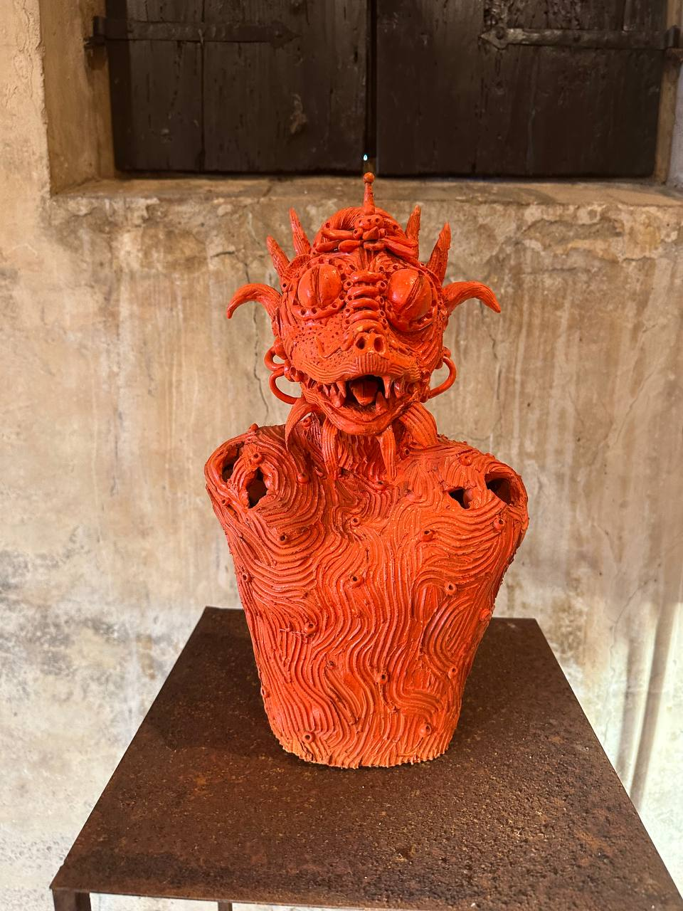
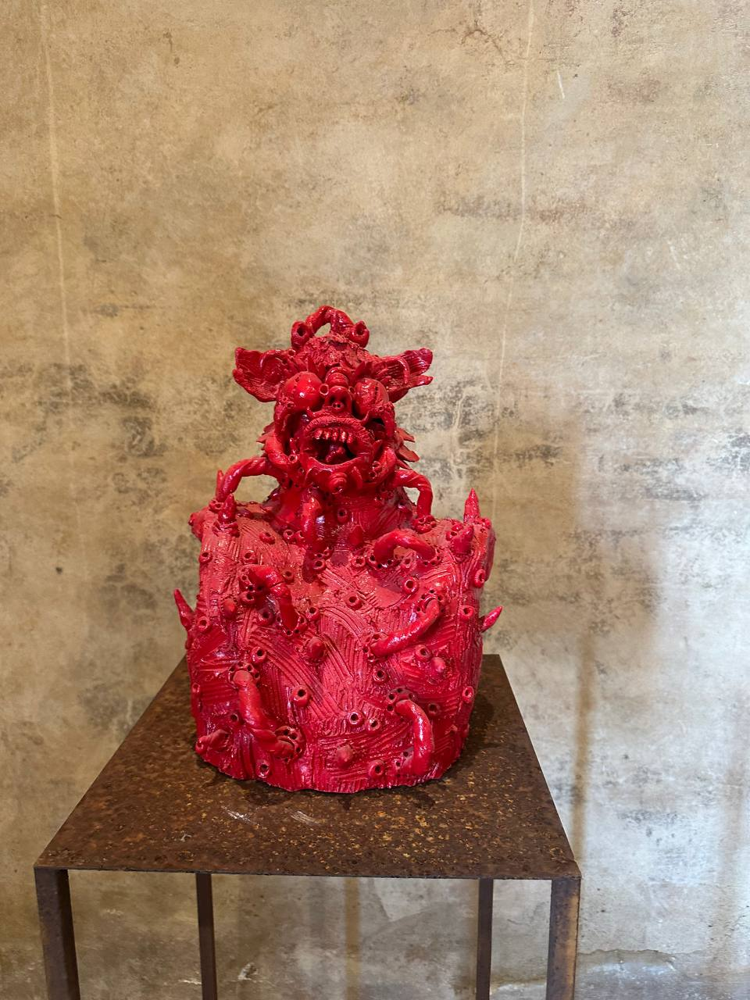
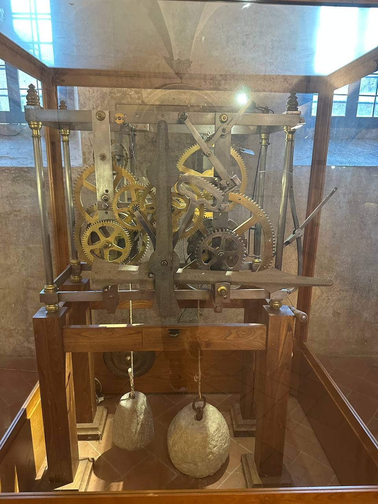
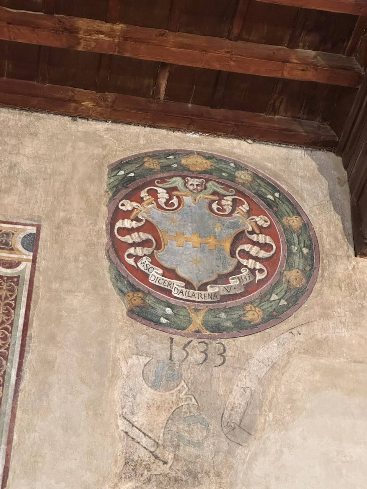
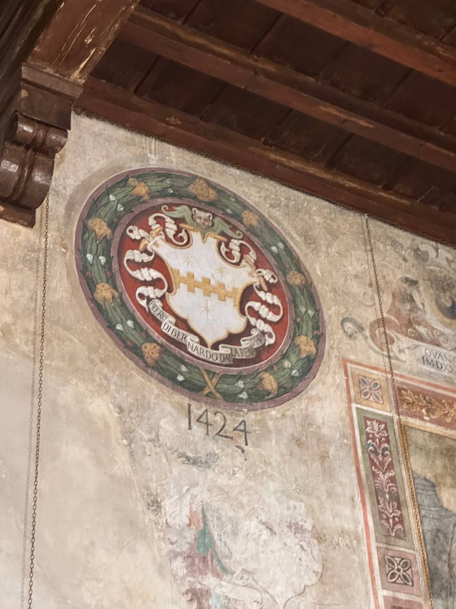

-
-
 Drago arancione di MUTSUO HIRANO
-
 Drago rosso di MUTSUO HIRANO
-
 1 dei più vecchi orologi
-
 il simbolo 1533
-
 il simbolo 1424
-
Certaldo ebbe origini etrusco-romane, come dimostrano i numerosi reperti archeologici sparsi in tutto il territorio comunale, quali ceramiche, utensili e tombe etrusche, alcune delle quali di recente scoperta.[15] Le origini etrusche sono testimoniate anche dalla toponomastica di alcune località e corsi d'acqua, come per esempio il torrente Agliena ed il fiume Elsa che confluiscono nei pressi di Certaldo.[16] In particolare sul Poggio del Boccaccio, un colle a forma trapezoidale con base ellittica e cima completamente piatta, adiacente al borgo medioevale in direzione nord-ovest, sono stati ritrovati, nel corso di scavi archeologici avvenuti alla fine del 1800 e a metà del 1900, una tomba a camera etrusco-ellenistica di pianta ellissoidale risalente alla fine del IV- inizio III secolo a.C., ed un deposito a pozzo di derrate alimentari con alcuni strumenti fittili riconducibili all'epoca ellenistica. Molto probabilmente l'area era sede di un deposito granario fina dal 300 a.C.[17][18] In altri scavi, eseguiti tra il XIX secolo ed il XX secolo nei pressi di un altro colle ritenuto artificiale, sempre adiacente al borgo medioevale ma stavolta in direzione sud-est, chiamato Poggio delle Fate, sono stati rinvenuti un granaio sotterraneo a celle[19] ed i resti di un tumulo etrusco e di numerose tegole bollate,[20] mentre numerose ceramiche databili dal VI - V secolo a.C. fino all'età ellenistica e frammenti di ceramiche aretine bollate sono state rinvenute nei pressi del torrente Agliena.[21] Alcuni ritrovamenti di anfore romane risalenti all'epoca imperiale (I secolo d.C.) in Piazza della Libertà, nella parte bassa della città, durante alcuni lavori edilizi del 1960 per la costruzione di una scuola media, dimostrano che vi sono stati insediamenti anche in epoca romana.[22] Tutti questi reperti di origine etrusca e romana sono oggi musealizzati al piano terra del Palazzo Pretorio, situato nella parte medievale del paese. Con ogni probabilità nel luogo in cui adesso sorge Certaldo vi era un piccolo insediamento etrusco, probabilmente un villaggio agricolo, come sembrano testimoniare i depositi di derrate nei poggi adiacenti al borgo, mentre sul Poggio del Boccaccio era situata la necropoli. Periodo medievale «Certaldo, come voi forse avete potuto udire, è un castello di Val d'Elsa posto nel nostro contado, il quale, quantunque picciol sia, già di nobil uomini e d'agiati fu abitato» (Giovanni Boccaccio, Decameron-VI,10) Lo sviluppo del castello fortificato nell'Alto Medioevo Certaldo fa la sua comparsa ufficiale nella storia nel 1164, quando il castello di "Certaldum" viene citato in un documento dell'imperatore Federico Barbarossa come feudo dato in concessione ai Conti Alberti,[23] ma senza ombra di dubbio i primi insediamenti fortificati sul colle sono da far risalire all'Alto Medioevo, epoca nella quale venne edificato il Mastio che oggi risulta incorporato dal Palazzo del Vicario. L'origine del Mastio è quasi sicuramente longobarda o franca, e prese la sua forma definitiva nel X-XI secolo: rappresentava il classico tipo di fortificazione alto-medioevale costituito da un'unica torre fortificata dotata di stalla, alloggi signorili e armeria. Certaldo, Palazzo Pretorio, particolare in cui è visibile l'originale struttura del Mastio del castello dei Conti Alberti Alcuni reperti archeologici, ritrovati sul Poggio del Boccaccio, risalenti al VI-VII secolo d.C.,[17] dimostrano l'esistenza di un insediamento agricolo, presumibilmente un deposito di derrate alimentari, e testimoniano che a quell'epoca il colle su cui sorge Certaldo Alta era ancora abitato. Molto probabilmente il villaggio agricolo alto-medioevale prese forma dal precedente insediamento risalente all'epoca etrusco-ellenistica e alla fine del IX secolo d.C., con l'importanza strategica dell'area dovuta al passaggio della via Francigena, vi venne edificata la prima fortificazione feudale. La torre fortificata si trovava all'apice di un colle da cui si poteva controllare la via Francigena, la principale strada di comunicazione medioevale tra l'Europa del Nord e Roma. Dal mastio originario si controllava a distanza il vecchio tracciato in collina della via Francigena, e direttamente quello di fondovalle, più recente ma via via sempre più importante e trafficato. Questa posizione strategica favorì sicuramente lo sviluppo demografico e la sua evoluzione prima in Castello e successivamente in un borgo fortificato, portando alla costruzione di edifici civili attorno al Mastio primordiale. Nascono tra l'XI ed il XIII secolo la Chiesa dei Santi Tommaso e Prospero (la chiesa più antica del borgo medioevale, oggi sconsacrata), l'annesso convento e chiostro, la Torre dei Lucardesi e le prime abitazioni civili e case torri lungo via Rivellino, la via più antica del borgo che collega la fortificazione alla via Francigena, e nei pressi della torre sulla sommità del colle. Una prima cinta muraria racchiudeva tutto questo primitivo nucleo urbano che assumeva la conformità di un castello fortificato vero e proprio. Certaldo, via del Rivellino, Torre dei Lucardesi Certaldo, via del Rivellino Feudo dei Conti Alberti e guerra di Semifonte Certaldo faceva parte delle numerose fortificazioni che gli Alberti disseminarono in tutta la Valdelsa per contenere l'espansionismo della Repubblica fiorentina, assieme a San Miniato, Fucecchio, Montegrossoli, Semifonte, Castel Timignano, Pogna, Lucardo e Vico d'Elsa. Tutti questi castelli e fortificazioni formavano una sorta di cintura militarizzata che circondava la città di Firenze, in modo da contrastarla ed impedire ogni sua espansione. Con la frammentazione della famiglia degli Alberti, avvenuta con i figli di Alberto IV degli Alberti, Maghinardo, suo secondogenito, divenne il capostipite del ramo dei Conti di Certaldo. Il castello di Certaldo divenne così sede e residenza del ramo di Certaldo dei Conti Alberti da cui controllava le altre fortificazioni vicine ed il contado. Nella seconda metà del 1100 Certaldo si trova coinvolta negli attriti e nelle guerre tra Firenze e i Conti Alberti: dopo infatti la distruzione di Prato, sede principale degli Alberti, la famiglia spostò il centro del suo potere in Valdelsa, in modo da impedire l'accesso alla via Francigena da parte di Firenze. Forti del riconoscimento imperiale dei loro domini sul territorio toscano, e dell'investitura da parte dell'imperatore del Sacro Romano Impero Federico I Hoenstaufen noto come Federico Barbarossa, Alberto IV comincio la costruzione di Semifonte tra il 1177 ed il 1181. La costruzione di Semifonte scatenò l'opposizione di Firenze che dichiarò guerra agli Alberti. Certaldo così, come tutti gli altri castelli della Valdelsa, entrava in guerra nello schieramento Albertiano. Firenze inviò una prima spedizione militare nel 1182. Con l'occupazione del castello di Pogni, vicino a Certaldo, da parte di Firenze, gli Alberti bloccarono la costruzione di Semifonte, ripresa dopo appena due anni. Questo provocò un secondo e più massiccio intervento militare da parte di Firenze contro gli Alberti nel 1184. Le truppe fiorentine occuparono nuovamente Pogni e distrussero la fortezza di Mangona, nel Mugello, dove lo stesso Conte Alberto IV fu fatto prigioniero. In cambio della libertà il conte dovette accettare le dure condizioni di Firenze, che lo obbligavano a scapitozzare le torri difensive di Certaldo, a smantellare completamente la fortezza di Pogni e il castello di Semifonte, e a cedere a Firenze metà degli introiti dei dazi percepiti sulla via Francigena. Certaldo restava sotto il controllo dei conti Alberti, ma le sue torre difensive vennero smantellate. Casa di Boccaccio, interno. Certaldo, assieme a Semifonte e Mangona, rimase al di fuori della Lega di Tuscia, formatasi nel 1197, per volere di Firenze, in modo da indebolire il potere feudale degli Alberti: escludendo infatti dalla Lega, che sanciva tra le altre cose la reciproca difesa dei partecipanti, le migliori e più importanti fortezze degli Alberti, veniva inflitto un duro colpo al potere della famiglia comitale da parte di Firenze. Annessione alla Repubblica di Firenze Nel 1198, con lo scoppio della guerra tra Semifonte, ormai divenuto un vero e proprio libero comune sotto il protettorato degli Alberti, e Firenze, Certaldo fu occupata nello stesso anno dalle truppe di Firenze, in modo da isolare Semifonte e sottrargli i possibili aiuti che potevano giungere da Certaldo. Nel 1200, in seguito ad un accordo stipulato tra lo stesso Conte Alberto e la repubblica di Firenze, gli Alberti cedettero definitivamente Certaldo e i diritti di cui godevano su Semifonte a Firenze. Da quel momento Certaldo entra definitivamente sotto il dominio della repubblica fiorentina, e non conosce quindi l'ulteriore evoluzione in libero comune, tipica di altre località vicine. A seguito della distruzione della vicina città di Semifonte ad opera dei Fiorentini nel 1202, la città vide un notevole sviluppo causato dai profughi semifontesi. Si sviluppa infatti nel XIII secolo via Boccaccio, la via principale che fungeva anche da piazza, lungo la quale sorgono la Casa del Boccaccio, Palazzo Machiavelli, la Canonica dei SS Jacopo e Filippo e le abitazioni lungo la via. Certaldo, via Boccaccio Il definitivo spostamento della via Francigena sul percorso di fondovalle, ai piedi del colle su cui sorge Certaldo, favorì ulteriormente lo sviluppo ed il rafforzamento del Castello. Lo sviluppo di via Boccaccio e la costruzione di nuovi edifici nel XIV secolo come Palazzo Stiozzi Ridolfi, Palazzo Giannozzi, il palazzo di Scoto da Semifonte, la casa-torre dei Della Rena e la Loggia del mercato portano alla saturazione della cima del colle da parte del nucleo urbano, che assume la sua forma definitiva e attuale. Sempre del XIV secolo è anche la cinta muraria odierna, con le sue tre porte: Porta Alberti, da cui scende la costa Alberti in direzione di Pisa, Porta al Sole e Porta al Rivellino, da cui si snoda la costa Vecchia in direzione Sud, verso Siena e Roma. Certaldo, Palazzo Pretorio, sede del Vicariato Dopo la battaglia di Montaperti (1260) in cui le truppe guelfe di Firenze furono sconfitte dalla ghibellina Siena, Certaldo fu saccheggiata dalle truppe senesi. Nel 1313 vi ebbe con molta probabilità i propri natali Giovanni Boccaccio, che visse a Certaldo stabilmente negli ultimi anni della sua vita e vi morì sicuramente nel 1375. Nel 1415 divenne la sede di uno dei Vicariati in cui si suddivideva amministrativamente la Repubblica fiorentina prima ed il Granducato di Toscana successivamente. Il vicario veniva nominato semestralmente da Firenze ed amministrava la giustizia criminale ed aveva ampie competenze amministrative. Il Vicariato della Valdelsa, conosciuto anche come Vicariato di Certaldo, dove aveva la sua sede, durò dal 1415 al 1784, anno in cui fu soppresso in seguito alla riforma amministrativa del Granducato di Toscana eseguita dai Lorena. La sua circoscrizione ed il territorio di competenza mutò nel corso degli anni, raggiungendo la sua massima estensione sotto Cosimo I de' Medici nel XVI secolo, comprendendo quasi tutto il territorio della Valdelsa, della Val di Pesa, di parte del Chianti e arrivando fino al Valdarno. Il vicariato di Certaldo, a quell'epoca, comprendeva, oltre alla podesteria di Certaldo, le podesterie di Barberino Val d'Elsa, di Castelfiorentino, di Empoli, di Galluzzo, di Gambassi e Montaione, di Montespertoli, di Montelupo Fiorentino, di Poggibonsi, di Radda in Chianti e di San Casciano in Val di Pesa[24]. Nel 1479 la città venne saccheggiata dalle truppe senesi e dal Duca di Calabria, e la sede vicariale viene spostata temporaneamente nella vicina Castelfiorentino. Per tutto il secolo XV Certaldo conobbe un notevole sviluppo culturale ed economico, favorito dalla posizione strategica sulla via Francigena e dalla sede Vicariale, tanto da diventare il centro politico e giurisdizionale più importante di tutta la Valdelsa; dai resoconti vicariali sappiamo che vi era un ospedale e una scuola e sappiamo che a Certaldo vi si tenevano tutti i processi penali dell'epoca, dove venivano giudicati ed eventualmente condannati i colpevoli che risiedevano nel territorio del Vicariato.[25] Nello stesso periodo vengono modificati il mastio e il palazzo signorile feudale, trasformandoli nell'attuale Palazzo Pretorio dove risiedeva il Vicario. Periodo moderno Certaldo, Borgo Garibaldi e Piazza Boccaccio, veduta sul Castello Durante il periodo Mediceo, dal XVI fino al XVIII secolo, Certaldo fu considerato un distretto di produzione agricola, e pertanto destinato ad uno sfruttamento totale. Per tutto questo periodo non si ha nessun ampliamento del borgo, se non la costruzione del bastione circolare di Palazzo Pretorio e della fortificazione di Porta al Rivellino. Molto probabilmente nel tardo Medioevo e nel periodo rinascimentale, tra XIV e XV secolo, cominciarono a svilupparsi i primi insediamenti ai piedi del borgo fortificato, alle intersezioni tra la via Francigena e le principali vie di accesso al castello. Questi insediamenti, di natura agricola ed abitativa, sono palesemente ancora visibili in via di Stradella Vecchia, all'incrocio tra la via Francigena (oggi via Roma) e Costa Vecchia (la via di accesso più antica e suggestiva per Certaldo Alta) e lungo la parte finale di Costa Alberti, all'incrocio con la Francigena in direzione nord-ovest (oggi Borgo Garibaldi). Al XIV secolo risalgono molti insediamenti agricoli, soprattutto poderi, situati intorno a Certaldo, uno tra tutti la Fattoria del Bassetto, a sud del paese. Nel XVI secolo invece venne costruito il mulino sul fiume Elsa, situato presso il ponte sullo stesso fiume. Con l'avvento dei Lorena la nuova politica, liberale e favorevole agli scambi, sposta l'attenzione dal borgo fortificato alla strada Francigena in fondovalle, dove si incomincia a sviluppare, a partire dai precedenti insediamenti di epoca tardo medioevale, un nuovo nucleo urbano, staccato e distinto dal borgo medioevale fortificato sulla sommità del colle. Certaldo, Piazza Boccaccio con il municipio e la Chiesa di San Tommaso Nel 1757 la Propositura viene trasferita dalla Chiesa dei SS Tommaso e Prospero alla chiesa di S Andrea del Borgo (oggi sconsacrata), sull'innesto di Costa Alberti nella via Francigena, nel borgo basso. Nel 1772 il Vicariato di Certaldo fu privato delle competenze amministrative e della giurisdizione su alcune podesterie, comprendendo un territorio più circoscritto, limitato alle podesterie di Certaldo, Barberini di Val d'Elsa, Castelfiorentino, Gambassi, Montespertoli e San Casciano in Val di Pesa. Infine, nel 1787, il Vicariato di Certaldo e la relativa podesteria furono soppresse: la giurisdizione civile fu sottoposta alla podesteria di Catelfiorentino, mentre quella criminale fu incorporata nel Vicariato di San Miniato[26]. Il borgo alto perse così la sua funzione amministrativa e quindi la sua importanza strategica, politica ed amministrativa. Tutto ciò provocò una decadenza del vecchio borgo e lo sviluppo del nuovo borgo in basso, dove si formarono le prime abitazioni civili lungo la via Francigena ai piedi del castello. Nel 1849, con la costruzione della linea ferroviaria Empoli – Siena e della stazione ferroviaria di Certaldo, nascono le prime attività manifatturiere che danno una grandissima spinta allo sviluppo industriale, commerciale, demografico ed urbanistico. Il borgo basso si sviluppa ulteriormente, assumendo la sua forma attuale, con Piazza Boccaccio, dove vengono trasferiti il comune e la propositura, e diventa il fulcro centrale del nuovo borgo, che si espande tra la via Francigena e la ferrovia, con abitazioni private, attività manifatturiere e agricole e la stazione dei treni. Al plebiscito del 1860 per l'annessone della Toscana alla Sardegna i "sì" non ottennero la maggioranza degli aventi diritto (650 su totale di 1950 aventi diritto), con un astensionismo da record, sintomo dell'opposizione all'annessione.[27] Lo sviluppo urbanistico e manifatturiero continuano per tutto il XIX ed il XX secolo: il centro urbano si sviluppa sui nuovi assi di Via II Giugno e Viale Margherita, oggi Viale Matteotti, e prosegue anche durante il ventennio fascista con la costruzione dell'attuale palazzo scolastico in Piazza della Libertà. Durante la seconda guerra mondiale, Certaldo fu uno dei comuni della Toscana designati a luogo di internamento libero per ebrei stranieri e dissidenti politici. Vi soggiornarono a domicilio coatto due persone: Antonio Barboric, un sarto di Lubiana, accusato di attività sovversive, e un ebreo greco, Atanasio Liaorutzos.[28] Con il passaggio del fronte, Certaldo subisce vari bombardamenti, che portano alla perdita di edifici storici nella parte alta del paese; uno per tutti, la Casa di Giovanni Boccaccio, ricostruita nell'immediato dopoguerra. Il 21 maggio 1983 a Certaldo ebbe luogo il Rock in a hard place, il primo vero festival heavy metal italiano, voluto dalla redazione della fanzine fiorentina Metal City Rockers[29]. Storia di Pogna Ruderi del castello di Pogna Cappella di San Michele o Cupola di San Donnino Lo stesso argomento in dettaglio: Pogna. Il castello di Pogni, conosciuto anche come "Pogna", rappresentava uno dei più potenti avamposti della famiglia feudale degli Alberti, i signori medioevali della Valdelsa. Le prime notizie storiche del castello di Pogni risalgono al 1059 e sappiamo che nel 1184 fu assediato ed espugnato per la prima volta dai fiorentini. Durante tale battaglia venne fatto prigioniero lo stesso conte Alberto degli Alberti che in cambio della propria libertà giurò di demolire tutte le fortificazioni del castello e le torri della vicina Certaldo. In un documento del XIII secolo viene riconfermato il dominio della famiglia Alberti sul castello di Pogni, ma possiamo considerarla come l'ultima espressione del potere feudale nella zona; dopo la distruzione di Semifonte l'autorità del comune di Firenze si sostituisce definitivamente al potere feudale e nel 1312 il castello viene completamente distrutto dalle truppe di Arrigo VII, a cui segue il completo abbandono della roccaforte; le fortificazioni furono riattivate per un breve periodo dalla Signoria di Firenze alla fine del XIV secolo. Dell'imponente castello restano soltanto una torre dimezzata in senso verticale e alcuni resti del vecchio palazzo, molti dei quali ormai incorporati nelle case rurali sorte ai piedi dell'antica roccaforte. Storia della collina di Semifonte Lo stesso argomento in dettaglio: Semifonte e Cappella di San Michele (Semifonte). Alla fine dell'Alto Medioevo sorse sulle colline situate tra Certaldo e Barberino Val d'Elsa il castello di Semifonte, uno degli ultimi ad essere costruito nella zona e dominato dalla famiglia dei Conti Alberti; rappresentava l'ultimo baluardo del potere feudale in piena età dei comuni. Nel XII secolo conobbe un notevole sviluppo dovuto alla discesa degli imperatori germanici al fine di schiacciare le autonomie comunali. L'imperatore Federico il Barbarossa volle che il castello e l'insediamento si sviluppassero enormemente affinché Semifonte diventasse una spina nel fianco di Firenze. In breve tempo, grazie alla sua posizione strategica equidistante da Siena e da Firenze e grazie ad una politica aperta agli sbandati, ai rifugiati e agli esuli, il castello divenne una vera e propria città in continuo sviluppo demografico, costituita dal castello fortificato e da un notevole borgo che si sviluppava appena subito fuori dalla cinta muraria, l'odierno abitato di Petrognano. Lo sviluppo continuò a farla crescere e a renderla una sorta di città "maledetta", invisa da Firenze e dalla stessa Siena. Agli inizi del Duecento il perimetro delle mura di Semifonte era di poco inferiore a quello della Firenze contemporanea, tant'è che Firenze stessa propose a Semifonte di limitare il suo sviluppo demografico e di sottomettersi all'autorità fiorentina. Semifonte, in risposta, posizionò su una delle porte rivolte verso Firenze un'iscrizione dove si leggeva: "Florentia fatti in là che Semifonte si fa città". Fallita la via diplomatica Firenze inviò le sue milizie, che aiutate da mercenari mandati da Siena, attuò la distruzione "sistematica" di Semifonte: ogni edificio, palazzo o casa fu completamente raso al suolo e tutti i suoi abitanti furono uccisi e sepolti o fuggirono nelle città vicine come Certaldo, Poggio Bonizio (oggi Poggibonsi) e Barberino Val d'Elsa. Un editto impose il divieto assoluto di costruzione su quel colle e fu derogato solo nel 1597, anno in cui fu costruita su progetto di Santi di Tito la cappella di San Michele Arcangelo, detta volgarmente "cupola di San Donnino": la cappella è a pianta ottagonale e riproduce fedelmente in scala 1:8 la cupola del Duomo di Firenze di Filippo Brunelleschi. La cappella occupa solitaria la cima del colle e indica il centro in cui sorgeva anticamente quella città maledetta di cui non resta più niente. Il borgo di Petrognano sorge attualmente nel punto in cui sorgeva il borgo esterno della città.
More info